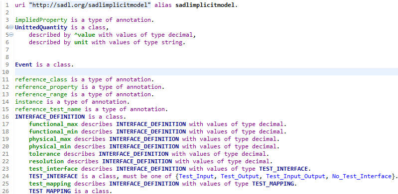

Last revised 05/02/2017. Send comments to mailto:crapo@research.ge.com.
An alpha release of SADL Version 3 is available at
https://github.com/crapo/sadlos2/releases.
Download the com.ge.research.sadl.update-3.x.x.xxxxxxxxx.zip file and expand to
a local directory.
Then do an Eclipse update or install of new software from this newly created
update location.
Note that SADL source code is now hosted on github.com.
size is a property with values of type data.
is a type of int [12,]. // an int >= 12over12
Latitude
is a type of float [-90, 90].<rdfs:Datatype rdf:ID="Latitude">
<owl:equivalentClass>
<rdfs:Datatype>
<owl:withRestrictions
rdf:parseType="Collection">
<rdf:Description>
<xsd:maxInclusive>90</xsd:maxInclusive>
<xsd:minInclusive>-90</xsd:minInclusive>
</rdf:Description>
</owl:withRestrictions>
<owl:onDatatype
rdf:resource="http://www.w3.org/2001/XMLSchema#float"/>
</rdfs:Datatype>
</owl:equivalentClass>
</rdfs:Datatype>
Person is
a
class
described
by
children
with
values
of
type Person
List.
^List is a class
described by ^first,
described by rest with values of type ^List,
described by lengthRestriction with values of type int,
described by minLengthRestriction with values of type int,
described by maxLengthRestriction with values of type int.
So ... children with values of type Person List creates
<owl:ObjectProperty rdf:ID="children">
<rdfs:domain rdf:resource="#Person"/>
<rdfs:range rdf:nodeID="A0"/>
</owl:ObjectProperty>
<owl:Class rdf:nodeID="A0">
<rdfs:subClassOf rdf:resource="sadllistmodel#List"/>
<rdfs:subClassOf>
<owl:Restriction>
<owl:allValuesFrom>
<owl:Class rdf:ID="Person"/>
</owl:allValuesFrom>
<owl:onProperty rdf:resource="sadllistmodel#first"/>
</owl:Restriction>
</rdfs:subClassOf>
<rdfs:subClassOf>
<owl:Restriction>
<owl:allValuesFrom rdf:nodeID="A0"/>
<owl:onProperty rdf:resource="sadllistmodel#rest"/>
</owl:Restriction>
</rdfs:subClassOf>
</owl:Class>
SmallGroupType is a type of Person List length 0-6.
LargeGroupType is a type of Person List length 7-*.
MyFriends is the Person List [Mark, Samantha].
Equations
Internally defined (Equation)
Equation areaOfSquare(float s) returns float: s^2 .
Equation areaOfRectangle(float h, float w) returns float: h*w.
Equation areaOfCircle(float r) returns float: PI*r^2.
External min(float x, float y) returns float: "java.lang.Math.min".
External max(float x, float y) returns float: "java.lang.Math.max".
George
is
a
Person
with
age 23 years,
with
weight 165 lbs,
with
height 70 inches,
with
heightPercentile 50 "%" .
UnittedQuantity
is
a
class,
described
by
^value
with
values
of
type
decimal,
described
by
unit
with
values
of
type
string.
//UnittedQuantity has
impliedProperty ^value.
Test:
height
of
George < 70.
Test:
age
of
George > 21.
i(1): Implied property 'value' used (left side of 'function') to pass type check
i(2): Implied property 'value' used (left side of '/') to pass type check
i(3): Multiple markers at this line
- Implied property 'validity' added to both sides of 'set to' in translation
- Implied property 'value' added to both sides of 'set to' in translationi(4): Implied property 'value' used (left side of '>') to pass type check
- Equation
- External

- Lines 1 through 6 added by SADL plug-ins.
- Lines 9 through 26 added by SRL plug-ins.
SADL 3 supports the inclusion of imported models that are not in the current project in two ways.
To make a SADL project reference another project:
To make an external OWL file available for import in a SADL project:
This will create a ".url" file if it doesn't exist and open it in the External URL editor. If it does already exist it can be opened directly from the Project Explorer. Once the ".url" file is open: